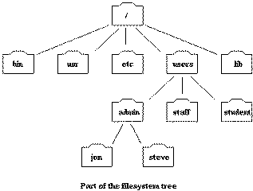

|
ΘΕΜΑΤΑ

-
Εισαγωγή στο λειτουργικό σύστημα
Linux.
-
Linux Filesystem: root,
directory tree, relative and absolute path, home
directory ( ~, $home, $HOME), current and parent
directory (. and ..). Directories /home (home
directories), /etc (configuration files), /bin, /usr/bin,
/usr/local/bin (program directories), /lib, /usr/lib,
/usr/local/lib (program libraries) , /include, /usr/include
(header files for C programs), /dev (devices), /var,
/proc, /boot, /root. Εξερευνήστε τους παραπάνω
καταλόγους και προσπαθήστε να βρείτε τι είδους
αρχεία περιέχουν (χρησιμοποιήστε και το βιβλίο
Running Linux).
-
Βασικές εντολές:
passwd, ls,
cp,
pwd (πλοήγηση),
cp,
mv,
rm,
ln (αρχεία και
υποκατάλογοι), cat,
less,
more,
head,
tail (εξέταση
περιεχομένου αρχείων ASCII).
ΒΙΒΛΙΟΓΡΑΦΙΑ

ΕΞΑΣΚΗΣΗ
Εισαγωγικά σε
Linux/Unix
συστήματα
-
Κάνετε
logon στο σύστημα. Αν κάνετε
logon για πρώτη φορά θα χρειαστεί να
αλλάξετε το κωδικό πρόσβασης. Για να το κάνετε αυτό
πληκτρολογήστε την ακόλουθη εντολή:
passwd.
Το σύστημα θα σας ζητήσει να πληκτρολογήσετε
το παλιό σας κωδικό και μετά το νέο. Είναι καλό να
χρησιμοποιείτε πάντοτε για κωδικό συνδυασμούς
γραμμάτων (μικρά και κεφαλαία γράμματα ερμηνεύονται
διαφορετικά) και συμβόλων (νούμερα, και κάποιο από
τα !@#$%^&*). Ο κωδικός σας θα πρέπει να ξεκινά από
γράμματα και να είναι πάνω από 8 χαρακτήρες μακρύς.
Προσέξετε να θυμάστε τον κωδικό σας.
-
Αφού αλλάξατε το κωδικό σας βγείτε από το σύστημα (logout)
και ξανασυνδεθείτε. Για να κάνετε
logout πληκτρολογήστε
logout ή
exit ή <control>D.
Στα workstations
θα πρέπει να πάτε στο αντίστοιχο
window και να πιέσετε
exit ή logout.
-
Εξασκηθείτε με τις
ακόλουθες εντολές
Το
filesystem του
Linux/Unix και χρήσιμες εντολές
Περιηγηθείτε στο filesystem με τις εντολές
cd,
ls,
pwd.
Εξετάστε τα περιεχόμενα των καταλόγων που
αναφέρονται στο παραπάνω διάγραμμα.
-
Ακολουθήστε
το
παρακάτω
tutorial.
Διαβάστε τις εντολές και
επαναλάβετε.
-
Το ίδιο και με το
επόμενο
tutorial. Εξετάστε τα περιεχόμενα των
αρχείων με τις εντολές
less,
more,
cat.
Αντιγράψτε/αλλάξτε όνομα/διαγράψτε αρχεία με τις
εντολές
cp,
mv,
rm,
ln. Φτιάξτε
υποκαταλόγους με την εντολή
mkdir.
-
Δείτε τη σημασία των εντολών στο ακόλουθο
tutorial και επαναλάβετε τις εντολές
αυτές για να δείτε τι ακριβώς σας δίνουν.
-
Αρχίστε να γράφετε μια εντολή ή το
όνομα ενός αρχείου και δοκιμάστε να πατήσετε το
πλήκτρο Tab.
Τι παρατηρείτε;
Το σύστημα από μόνο του συμπληρώνει
το όνομα. Δοκιμάστε με αρχεία που έχουν παραπλήσιο
όνομα.
-
Εξασκηθείτε με τις
ακόλουθες ασκήσεις.
-
Διαβάστε και μάθετε από το
Running Linux
VI
και
EMACS
Editors
-
Πληκτρολογήστε την εντολή
emacs
(αν δεν δουλέψει τότε δοκιμάστε
xemacs).
-
Στο
παράθυρο που ανοίγει μπορείτε να πληκτρολογήσετε ότι
θέλετε. Χρησιμοποιώντας το ποντίκι μπορείτε να
σώσετε αυτό που γράψατε σε ένα αρχείο με ότι όνομα
θέλετε.
-
Δοκιμάστε τις εντολές που περιγράφονται στην
ακόλουθη
ιστοσελίδα
-
Εξασκηθείτε με
αυτές τις ασκήσεις
MAIL
-
Ακολουθήστε το link "Ανακοινώσεις"
και βρείτε τις οδηγίες που αναφέρονται στο
τρόπο με τον οποίο μπορείτε να στείλετε
e-mail.
-
Δοκιμάστε να στείλετε e-mail
χρησιμοποιώντας pine
στο e-mail
λογαριασμό σας στο πανεπιστήμιο (<username>@ucy.ac.cy)
-
Προσπαθήστε να το διαβάσετε χρησιμοποιώντας το
webmail και το
browser. Ακολουθήστε τις
οδηγίες που αναγράφονται μετά τις οδηγίες για την
χρήση του
pine.
|